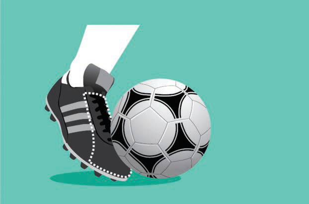

Pasi ndefu
Pasi ndefu ni kupiga mpira kwenda kwa mchezaji mwenzako ambaye yupo katika umbali mrefu.Pasi hii mara nyingi hupigwa kwa kutumia sehemu ya juu ya mguu, kama inavyoonekana katika Kielelezo namba 3.

Pasi ndefu ni kupiga mpira kwenda kwa mchezaji mwenzako ambaye yupo katika umbali mrefu.Pasi hii mara nyingi hupigwa kwa kutumia sehemu ya juu ya mguu, kama inavyoonekana katika Kielelezo namba 3.
